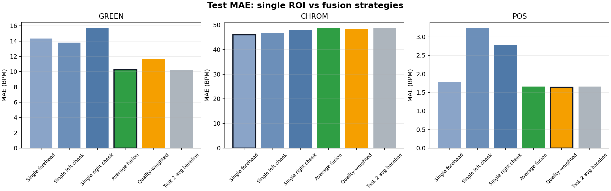
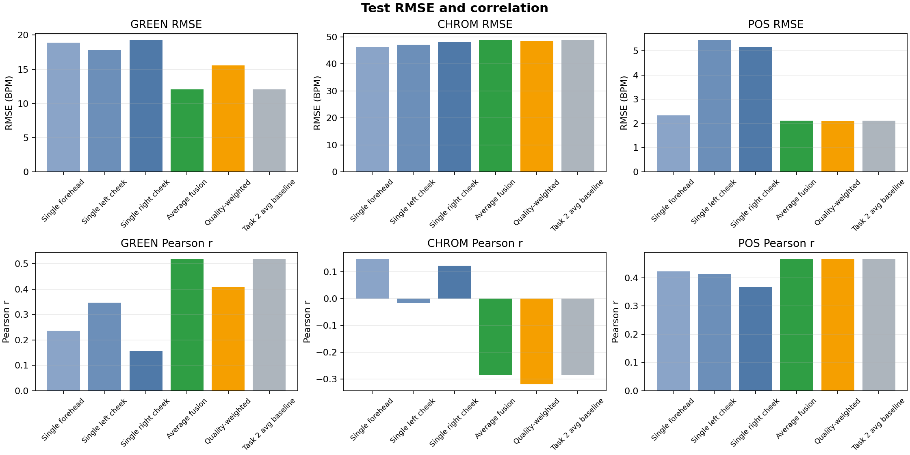
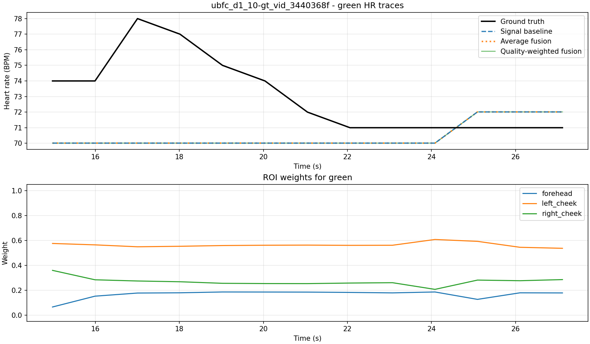

AIrPPG / Task 3
Multi-ROI Fusion Report
Báo cáo này đánh giá liệu dùng nhiều ROI có tốt hơn single ROI không, và liệu quality-weighted fusion có vượt simple average fusion không. Input chỉ lấy từ artifact Signal extraction, không đọc raw video hoặc raw UBFC ground truth.
Schema: fusion_v1
Samples: 49/49 processed
Split chính: test
Methods: Green / CHROM / POS
Metric đọc như thế nào?
MAE ↓
Sai số tuyệt đối trung bình. Đây là metric chính để nói method có đo HR sát ground truth không. Ví dụ POS quality-weighted MAE 1.64 BPM nghĩa là trung bình lệch khoảng 1.64 nhịp/phút.
Sai số tuyệt đối trung bình. Đây là metric chính để nói method có đo HR sát ground truth không. Ví dụ POS quality-weighted MAE 1.64 BPM nghĩa là trung bình lệch khoảng 1.64 nhịp/phút.
RMSE ↓
Phạt lỗi lớn mạnh hơn MAE. Nếu RMSE tăng nhiều khi MAE không tăng nhiều, strategy có một số window fail nặng.
Phạt lỗi lớn mạnh hơn MAE. Nếu RMSE tăng nhiều khi MAE không tăng nhiều, strategy có một số window fail nặng.
Pearson r ↑
Đo mức dự đoán đi cùng xu hướng ground truth. Có thể Pearson tốt nhưng MAE vẫn cao nếu dự đoán đúng trend nhưng bị bias.
Đo mức dự đoán đi cùng xu hướng ground truth. Có thể Pearson tốt nhưng MAE vẫn cao nếu dự đoán đúng trend nhưng bị bias.
SNR ↑
Đo độ rõ tín hiệu rPPG trong HR band. SNR tốt hỗ trợ confidence, nhưng không thay thế MAE/RMSE vì peak rõ vẫn có thể là peak sai.
Đo độ rõ tín hiệu rPPG trong HR band. SNR tốt hỗ trợ confidence, nhưng không thay thế MAE/RMSE vì peak rõ vẫn có thể là peak sai.
Phương pháp so sánh
Single ROI
Chỉ dùng một vùng: forehead, left_cheek hoặc right_cheek. Đây là baseline đúng để kiểm tra việc phụ thuộc vào một vùng mặt có yếu không.
Chỉ dùng một vùng: forehead, left_cheek hoặc right_cheek. Đây là baseline đúng để kiểm tra việc phụ thuộc vào một vùng mặt có yếu không.
Average fusion
Lấy trung bình tín hiệu 3 ROI rồi estimate HR. Cách này giảm nhiễu cục bộ nếu mỗi ROI có lỗi khác nhau.
Lấy trung bình tín hiệu 3 ROI rồi estimate HR. Cách này giảm nhiễu cục bộ nếu mỗi ROI có lỗi khác nhau.
Quality-weighted fusion
Mỗi window/method gán weight ROI dựa trên valid ratio, signal std, dominant power ratio, SNR-like và disagreement. Ý tưởng là tin ROI sạch hơn, nhưng score thủ công có thể chọn nhầm peak nhiễu.
Mỗi window/method gán weight ROI dựa trên valid ratio, signal std, dominant power ratio, SNR-like và disagreement. Ý tưởng là tin ROI sạch hơn, nhưng score thủ công có thể chọn nhầm peak nhiễu.
Lưu ý baseline: signal_extraction_baseline là baseline Task 2 đã average ROI, không phải single ROI. Nó chỉ dùng để kiểm tra Task 3 reproduce Task 2; so sánh nghiên cứu chính là single_* vs average_fusion vs quality_weighted_fusion.
Kết luận nhanh
Green tốt nhất
Average
MAE 10.24 BPM; tốt hơn từng single ROI. Multi-ROI average có lợi.
POS tốt nhất
Weighted
MAE 1.64 BPM; chỉ nhỉnh hơn average 1.66 BPM rất nhẹ.
CHROM
Yếu
MAE test quanh 46-49 BPM; kết quả fusion trên CHROM không có ý nghĩa tích cực.
Biểu đồ MAE chính

Bảng test split
Green
| Strategy | MAE ↓ | RMSE ↓ | Pearson ↑ | SNR | n windows |
|---|---|---|---|---|---|
| Single forehead | 14.35 | 18.92 | 0.237 | -5.02 | 206 |
| Single left cheek | 13.82 | 17.82 | 0.348 | -3.63 | 206 |
| Single right cheek | 15.68 | 19.28 | 0.156 | -3.50 | 206 |
| Average fusion | 10.24 | 12.09 | 0.519 | -2.48 | 206 |
| Quality-weighted | 11.69 | 15.59 | 0.407 | -2.45 | 206 |
| Task 2 avg baseline | 10.24 | 12.09 | 0.519 | -2.48 | 206 |
CHROM
| Strategy | MAE ↓ | RMSE ↓ | Pearson ↑ | SNR | n windows |
|---|---|---|---|---|---|
| Single forehead | 46.06 | 46.23 | 0.148 | -13.34 | 206 |
| Single left cheek | 46.88 | 47.10 | -0.017 | -13.59 | 206 |
| Single right cheek | 47.91 | 48.04 | 0.123 | -12.94 | 206 |
| Average fusion | 48.66 | 48.81 | -0.284 | -12.49 | 206 |
| Quality-weighted | 48.32 | 48.48 | -0.319 | -12.59 | 206 |
| Task 2 avg baseline | 48.66 | 48.81 | -0.284 | -12.49 | 206 |
POS
| Strategy | MAE ↓ | RMSE ↓ | Pearson ↑ | SNR | n windows |
|---|---|---|---|---|---|
| Single forehead | 1.80 | 2.33 | 0.423 | 0.92 | 206 |
| Single left cheek | 3.23 | 5.45 | 0.415 | -0.34 | 206 |
| Single right cheek | 2.79 | 5.16 | 0.369 | 0.88 | 206 |
| Average fusion | 1.66 | 2.12 | 0.467 | 2.06 | 206 |
| Quality-weighted | 1.64 | 2.10 | 0.466 | 2.86 | 206 |
| Task 2 avg baseline | 1.66 | 2.12 | 0.467 | 2.06 | 206 |
Task 2 avg baseline gần trùng average fusion vì cả hai đều average ROI. Đây là expected behavior, không phải mất đường trên biểu đồ.
RMSE và Pearson

Ví dụ HR trace và ROI weights

Nhận xét theo câu hỏi nghiên cứu
Multi-ROI average có ích.
Green và POS trên test tốt hơn từng ROI đơn lẻ. Điều này phù hợp giả thuyết trong proposal: một ROI có thể bị bóng/tóc/motion, nên average nhiều vùng giúp giảm nhiễu cục bộ.
Green và POS trên test tốt hơn từng ROI đơn lẻ. Điều này phù hợp giả thuyết trong proposal: một ROI có thể bị bóng/tóc/motion, nên average nhiều vùng giúp giảm nhiễu cục bộ.
Quality weighting chưa ổn định.
POS nhỉnh hơn average rất nhẹ, nhưng Green tệ hơn average. Lý do khả dĩ: quality score hiện tại ưu tiên peak/SNR cục bộ; peak rõ chưa chắc là peak HR đúng.
POS nhỉnh hơn average rất nhẹ, nhưng Green tệ hơn average. Lý do khả dĩ: quality score hiện tại ưu tiên peak/SNR cục bộ; peak rõ chưa chắc là peak HR đúng.
Đối chiếu baseline/paper trong proposal
- Green / CHROM / POS đã chạy trong Task 2-3. POS đang tốt nhất trên test split; CHROM rất kém ở protocol hiện tại.
- DeepPhys, PhysNet, TS-CAN, EfficientPhys mới là baseline tham chiếu trong proposal/docx, chưa chạy trong artifact hiện tại.
- So sánh hợp lệ hiện tại: nội bộ trên UBFC-rPPG giữa single ROI, average fusion, quality-weighted fusion với cùng HR windows và cùng ground truth align.
Kết luận cuối
Task 3 trả lời được câu hỏi chính: multi-ROI average giúp rõ với Green/POS so với single ROI; signal_extraction_baseline không phải single ROI mà là duplicate của average fusion; quality-weighted fusion hiện chưa đủ ổn định để xem là cải tiến chắc chắn. Hướng tiếp theo nên cải thiện quality score bằng motion/landmark stability và dùng confidence score để phát hiện window có khả năng sai.